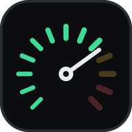
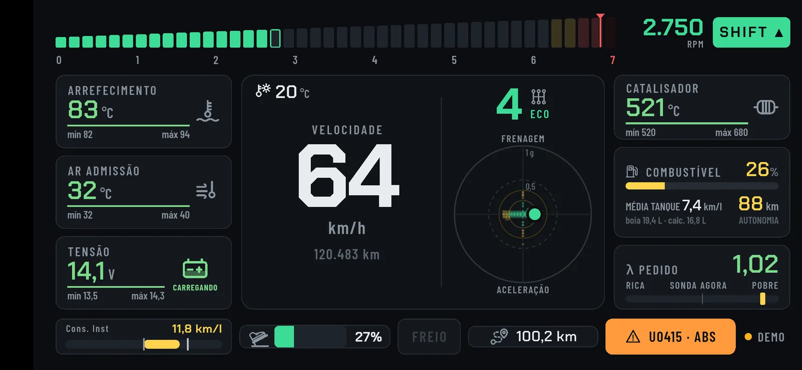
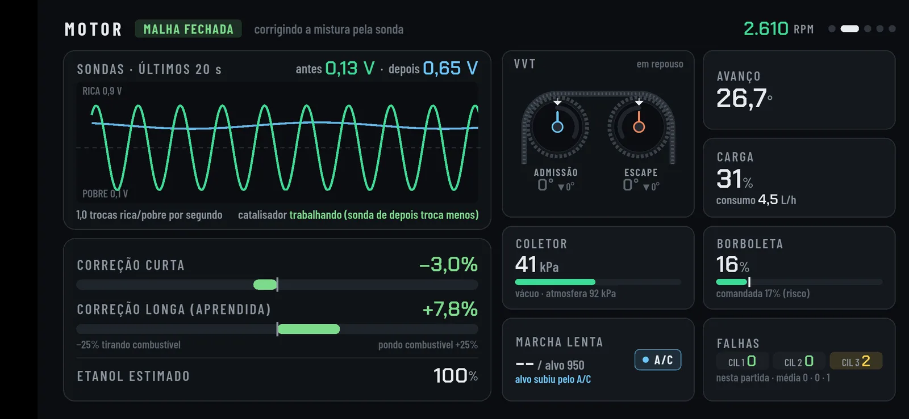
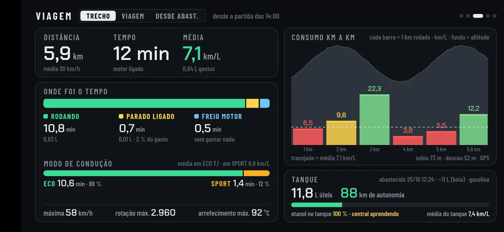
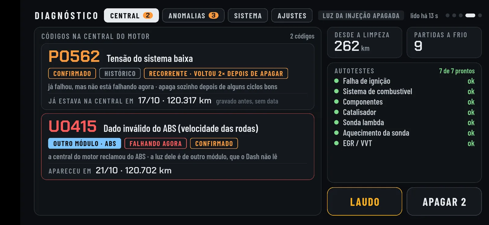
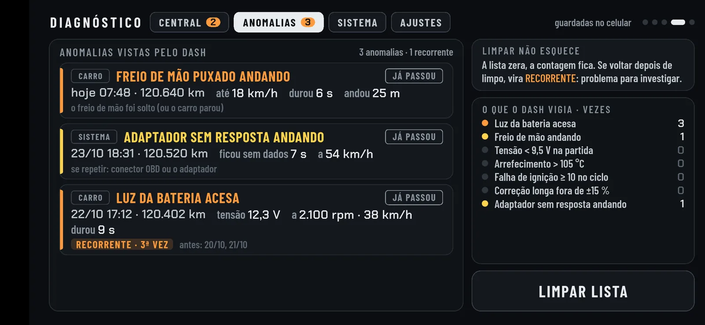
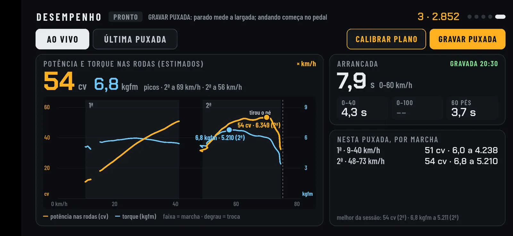

Principal
Conta-giros com luz de troca, velocidade, marcha calculada, modo ECO ou SPORT, força G, temperaturas, bateria, combustível e autonomia pelo consumo de verdade.

DASH KARotação, temperaturas, consumo, força G, diagnóstico e desempenho em tempo real, lidos direto da central do motor por um adaptador OBD2 Bluetooth.
Para o Ford Ka 1.0 Ti-VCT de 3 cilindros (2014 a 2021) · confira o seu
Fase de testes: instala em até 20 celulares autorizados · como funciona
Grátis · versão 1.1.0 · Android 8 ou mais novo · 40 MB

Apresentação
O Dash Ka transforma o celular num painel esportivo: em pouco mais de três minutos, veja tudo o que ele mostra.
O que ele mostra
Conta-giros com luz de troca, velocidade, marcha calculada, modo ECO ou SPORT, força G, temperaturas, bateria, combustível e autonomia pelo consumo de verdade.

Sondas lambda ao vivo, correções de mistura, etanol estimado no tanque, o comando de válvulas variável (real × pedido) e as falhas de ignição de cada cilindro.

Trecho, viagem e desde o abastecimento: onde foi o tempo, consumo quilômetro a quilômetro com o relevo do caminho, e as viagens e tanques anteriores.

Códigos de falha em português, quando apareceram e com quantos km, os autotestes da central e um laudo em PDF para mandar ao mecânico.

O que o próprio Dash percebeu rodando: luz da bateria, freio de mão puxado andando, superaquecimento. Se voltar depois de limpo, vira recorrente.

Potência e torque nas rodas estimados ao vivo, arrancada de 0 a 60 e 0 a 100, e as puxadas guardadas para comparar.
Como começar
Com o carro desligado, encaixe o ELM327 na porta OBD2, embaixo do painel, abaixo do volante. Só entra de um jeito: não force.
Ou já dê a partida. A luz do adaptador acende.
Nas configurações do celular, parear novo dispositivo, toque no "OBDII" (ou parecido). Senha 1234 ou 0000. Só na primeira vez.
Permita o Bluetooth e a localização. Ele acha o adaptador e conecta sozinho: o OBD fica verde no canto da tela.
O que você precisa
Versão 8 ou mais nova. iPhone não funciona.
OBD2 com Bluetooth comum. Barato, em lojas de autopeças e na internet. O OBDLink também serve.
O Ka da geração lançada em 2014 (até 2021), com o motor 1.0 Ti-VCT de 3 cilindros. Testado no 2020/21 e em outro Ka com a mesma central; os anos mais antigos dessa geração ainda não.
Instalação
O Dash Ka ainda não está na Play Store: o arquivo vem daqui do site. Antes de instalar, o seu celular precisa ser autorizado. É feito uma vez só, por celular.
Mande uma mensagem para @dashka.app no Instagram com o modelo do celular. Nesta fase de testes são 20 vagas.
Você recebe um link (vale 7 dias). Abra no celular onde vai instalar o Dash Ka e siga as instruções da tela: ele gera um código de autorização.
Copie o código e mande de volta na mesma conversa do Instagram. Quando a autorização for confirmada, você recebe o aviso para instalar.
No celular autorizado, toque em "Baixar para Android". Se o navegador avisar que o arquivo pode ser perigoso, confirme o download.
Abra o arquivo baixado. O Android pede para permitir instalar apps desta fonte (o navegador ou o gerenciador de arquivos): permita e volte.
Se o Play Protect disser que não conhece o app, toque em "Mais detalhes" e "Instalar assim mesmo".
Nos Androids mais novos aparece "este app foi criado para uma versão mais antiga do Android". É esperado: toque em OK.
Por que a autorização? Desde 30 de setembro de 2026, no Brasil, o Android só instala apps de fora da Play Store que estejam registrados por um desenvolvedor verificado. O Dash Ka está registrado no Android Developer Console do Google, na modalidade gratuita, que libera a instalação em até 20 celulares autorizados. O arquivo continua vindo daqui; na hora de instalar, o próprio Android confere se o app é o registrado e se o celular está autorizado.
Para atualizar, é só baixar e instalar a versão nova por cima: as viagens e os registros continuam. Trocou de celular? O novo precisa de uma autorização própria.
Perguntas
Porque o Android, no Brasil, só instala apps de fora da Play Store registrados por um desenvolvedor verificado. Na modalidade gratuita do registro, cada celular precisa ser autorizado (até 20). O processo leva poucos minutos e é feito uma vez só.
Ainda está em fase de testes com donos do mesmo Ka. A Play Store tem custo de cadastro e um período de testes próprio; ela fica para depois, se o app crescer.
Nada. O Dash Ka é grátis e não tem anúncios. Só o adaptador ELM327 é comprado à parte.
Por enquanto, só no Ford Ka da geração lançada em 2014 (até 2021) com o motor 1.0 Ti-VCT de 3 cilindros: foi testado no 2020/21 e em outro Ka com a mesma central. O Ka de antes de 2014 tem outro motor e outra central, e o Ka 1.5 tem outro motor: não são compatíveis. Em outros carros, rotação, velocidade e temperaturas (padrão OBD2) até podem aparecer, mas o freio, o freio de mão, o hodômetro e o comando variável são leituras próprias deste Ka.
O Dash só lê a central. A única coisa que ele escreve é apagar os códigos de falha, e só quando você pede, com o motor parado e confirmação. Não muda nenhuma configuração do carro.
Muito pouco, mas gasta. No dia a dia ele pode ficar encaixado; se o carro for ficar parado muitos dias, tire.
Não. Não há conta, anúncio nem estatística de uso. Tudo fica no celular. A única conexão à internet é para a temperatura da região (Open-Meteo), com a localização aproximada; sem internet ele usa a estimativa da central.
Confira a ignição ligada e a luz do adaptador acesa. Se o celular vê o adaptador mas não conecta, desfaça o pareamento no Bluetooth e pareie de novo. O nome do adaptador precisa ter "OBD" (como OBDII ou OBD2).
Sim. A conexão com o carro é pelo Bluetooth; a internet só traz a temperatura da região.